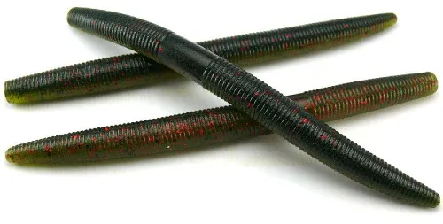
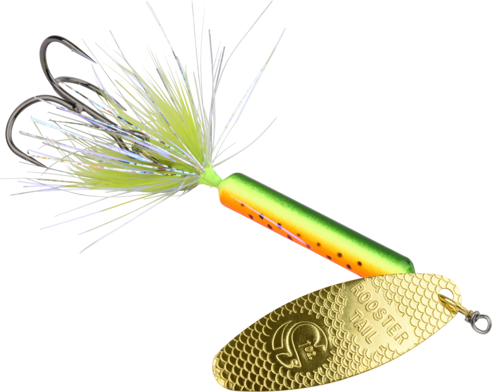
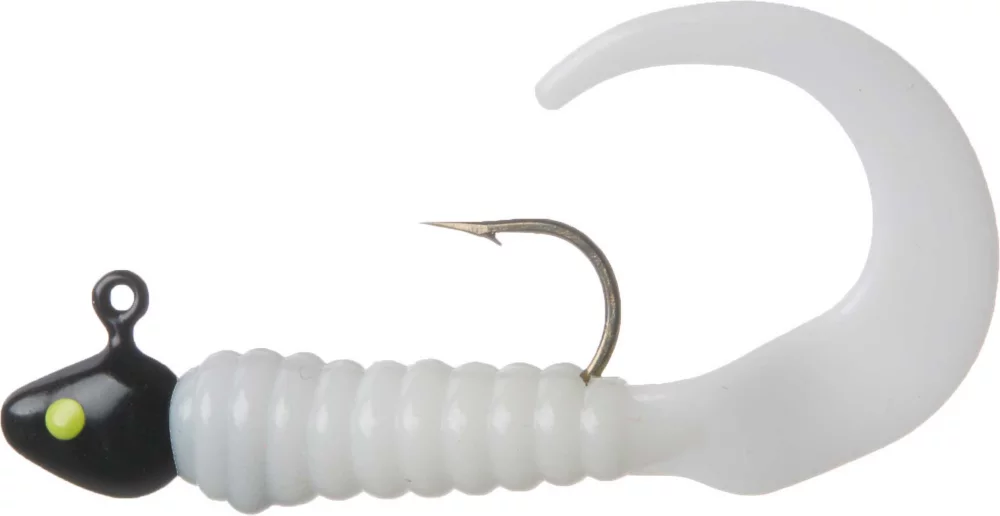
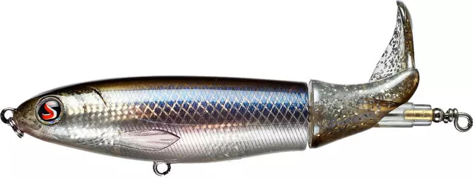

gear doesn't make a man. but it does make a difference.
fishing is a lot like school work. it helps to use the right tool for the job. you wouldn't use microsoft word to make a slide deck, just like you wouldn't fish for bluegills with senkos.
senko / stickbait
one of the most versatile and reliable lures is the senko. sometimes referred to as a stickbait, the senko is a tool for fishing bass under many circumstances. fishing for bass in shallow waters? you can cast your senko out parallel to the shore, leaving about 5-10 feet of space between your cast and the shore. be sure to twitch it as you pull in, to mimick the movement of something living. out on the boat fishing deeper waters? rig up a whacky worm and cast it out. this rig does all the work by itself, imitating lifelike movements as it floats deeper and deeper.
rooster tail
the rooster tail is a lure that's been around for a long time, unchanged. since the 50's, the rooster tail has been helping fishermen rip lips in ponds, lakes, and rivers around the world. the rooster tail is an inline spinner - meaning it has a reflective metal plate that freely spins around the body of the lure. this shiny metal catches the eye of bass, sunfish, and crappie quite easily.
soft plastic grub
this lure is a staple for catching smaller fish like crappie and bluegill. grubs are widely available and come in as many colors as you can think of. their versatility is what really makes them shine. i generally throw grub for smaller fish, but I've watched two of my buddies reel in 3 - 4lb bass on grubs. you don't have to be fancy with em. cast out, reel back intermittently with a little twitch, and you're sure to attract the attention of some hungry fish.
whopper plopper
if the fish you're targeting seem to be blowing up on the surface of the water a lot, you might wanna try a topwater lure like a whopper plopper. there are tons of options when it comes to top water lures, but the whopper plopper takes the cake for me. you tie it up at the nose ring. while you reel it in, it glides on the surface of the water. its propellor shaped tail has no resistance, so it spins freely as you reel it. this creates a water scooping effect that disturbs the water around it and creates a satisfying plopping noise as you reel it closer.